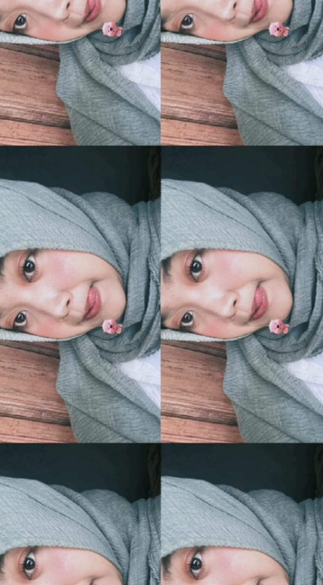

Identitas Pribadi

Nama: Melanie Gustania Nur Hapsari
NIM: 245410081
Program Studi: Teknik Informatika
Universitas: Universitas Teknologi Digital Indonesia
Motto Hidup: Bloom at your own pace, embrace every journey, and remember that everyone has their own time to shine.🌞
Artinya: Berkembanglah dengan waktumu sendiri, nikmati setiap perjalanan, dan percayalah pada prosesmu.
Tentang Saya
Saya adalah mahasiswa semester 5 Program Studi Teknik Informatika yang memiliki minat dalam bidang teknologi informasi, khususnya pengembangan website. Saat ini, saya sedang mempelajari HTML dan CSS untuk meningkatkan kemampuan dalam membuat website yang menarik, responsif, dan mudah digunakan. Melalui kegiatan perkuliahan dan praktikum, saya terus berusaha memperluas pengetahuan, mengembangkan keterampilan pemrograman, serta memperoleh pengalaman baru. Saya percaya bahwa proses belajar yang konsisten merupakan langkah penting untuk mencapai tujuan dan mempersiapkan diri menghadapi dunia kerja.
Minat dan Hobi
Salah satu minat dan hobi saya adalah memasak. Saya senang mencoba berbagai resep, mengenal bahan-bahan makanan, dan menciptakan hidangan baru. Bagi saya, memasak bukan hanya kegiatan yang menyenangkan, tetapi juga kesempatan untuk melatih kreativitas, ketelitian, dan kesabaran. Melalui hobi ini, saya ingin terus belajar mengembangkan kemampuan memasak, mencoba berbagai jenis hidangan, dan memperoleh pengalaman baru.